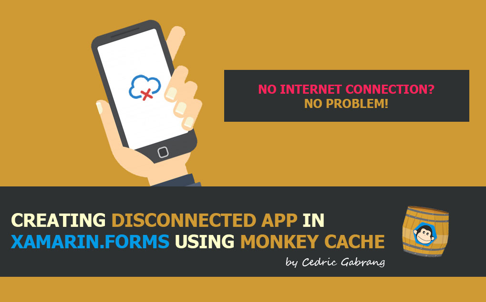

<!doctype html>
<!--[if lt IE 7]>      <html class="no-js lt-ie9 lt-ie8 lt-ie7" lang=""> <![endif]-->
<!--[if IE 7]>         <html class="no-js lt-ie9 lt-ie8" lang=""> <![endif]-->
<!--[if IE 8]>         <html class="no-js lt-ie9" lang=""> <![endif]-->
<!--[if gt IE 8]><!-->
<html class="no-js" lang="">
<!--<![endif]-->

<head>
    <meta charset="utf-8">
    <meta http-equiv="X-UA-Compatible" content="IE=edge">
    <title>Creating Disconnected Application in Xamarin.Forms using Monkey Cache</title>
    <meta name="description"
        content="In this article, I’m going to show you how to do data caching by using the Monkey Cache library by James Montemagno.">
    <meta name="viewport" content="width=device-width, initial-scale=1">


    <meta property="og:url" content="https://xambuild.github.io/creating-disconnected-app-using-monkey-cache.html" />
    <meta property="og:type" content="blog" />
    <meta property="og:title" content=">Creating Disconnected App in Xamarin.Forms using Monkey Cache" />
    <meta property="og:description"
        content="In this article, I’m going to show you how to do data caching by using the Monkey Cache library by James Montemagno." />
    <meta property="og:image" content="https://xambuild.github.io/images/caching/cover.jpg" />

    <link rel="stylesheet" href="https://cdn.jsdelivr.net/npm/normalize.css@8.0.0/normalize.min.css">
    <link rel="stylesheet" href="https://cdn.jsdelivr.net/npm/bootstrap@4.1.3/dist/css/bootstrap.min.css">
    <link rel="stylesheet" href="https://cdn.jsdelivr.net/npm/font-awesome@4.7.0/css/font-awesome.min.css">
    <link rel="stylesheet" href="https://cdn.jsdelivr.net/gh/lykmapipo/themify-icons@0.1.2/css/themify-icons.css">
    <link rel="stylesheet"
        href="https://cdn.jsdelivr.net/npm/pixeden-stroke-7-icon@1.2.3/pe-icon-7-stroke/dist/pe-icon-7-stroke.min.css">
    <link rel="stylesheet" href="https://cdnjs.cloudflare.com/ajax/libs/flag-icon-css/3.2.0/css/flag-icon.min.css">

    <link rel="stylesheet" href="assets/css/cs-skin-elastic.css">
    <link rel="stylesheet" href="assets/css/style.css">


    <link rel="stylesheet" href="prettify/prettify.css" />

    <script src="prettify/prettify.js"></script>

    <style type="text/css">
        .gist {
            width: 580px !important;
        }

        .gist-file .gist-data {
            max-height: 320px;
            max-width: 580px;
        }
    </style>

    <style>
        pre {
            white-space: pre-wrap;
            /* css-3 */
            white-space: -moz-pre-wrap;
            /* Mozilla */
            white-space: -pre-wrap;
            /* Opera 4-6 */
            white-space: -o-pre-wrap;
            /* Opera 7 */
            word-wrap: break-word;
            /* Internet Explorer 5.5+ */
        }
    </style>


    <!-- Global site tag (gtag.js) - Google Analytics -->
    <script async src="https://www.googletagmanager.com/gtag/js?id=UA-145467692-1"></script>
    <script>
        window.dataLayer = window.dataLayer || [];

        function gtag() {
            dataLayer.push(arguments);
        }
        gtag('js', new Date());

        gtag('config', 'UA-145467692-1');
    </script>


</head>

<body>
    <!-- Left Panel -->
    <aside id="left-panel" class="left-panel">
        <nav class="navbar navbar-expand-sm navbar-default">
            <div id="main-menu" class="main-menu collapse navbar-collapse">
                <ul class="nav navbar-nav">
                    <li class="active">
                        <a href="index.html"><i class="menu-icon ti-rss"></i>BLOG </a>
                    </li>

                    <li>
                        <a href="about.html"><i class="menu-icon ti-info-alt"></i></i>ABOUT </a>
                    </li>

                </ul>
            </div>
            <!-- /.navbar-collapse -->
        </nav>
    </aside>
    <!-- /#left-panel -->
    <!-- Right Panel -->
    <div id="right-panel" class="right-panel">
        <!-- Header-->
        <header id="header" class="header" style="background-color: #FFF;">
            <div class="top-left" style="background-color: #FFF; border-bottom: 1px solid #FFF">
                <div class="navbar-header">
                    <a class="navbar-brand" href="./"></a>
                    <a class="navbar-brand hidden" href="./"></a>
                    <a id="menuToggle" class="menutoggle"><i class="fa fa-bars"></i></a>
                </div>
            </div>

        </header>
        <!-- /#header -->
        <!-- Content -->
        <div class="content">
            <div class="animated fadeIn">

                <div class="card">
                    <div class="card-body">
                        <h3 class="text-dark" style="font-weight: 600;">Creating Disconnected Application in
                            Xamarin.Forms using Monkey Cache 🐒
                        </h3>
                        <p style="color: black">by<a target="_blank" style="color: black"
                                href="https://www.linkedin.com/in/cedric-gabrang"> Cedric Gabrang</a> • Apr 15th 2020
                        </p>
                        <br>
                        <br><br>
                        <div style="max-width: 870px;">
                            <h4 class="text-black" style="text-align: justify">
                                Every application needs to store data and almost every app developer running on the same
                                problem which is you have some data that you pulled from the internet or the user
                                entered it to the application, you need to save that data.<br><br>
                                If you are looking to accomplish to make a <strong> web request</strong>, save the
                                result <strong>locally</strong>, and
                                have it <strong>expire</strong> after a given amount of time, that is basically what we
                                called
                                <strong>caching</strong>.<br><br>
                                There are a lot of great solutions out there to cache data, but if you are looking for a
                                <strong>minimal amount of dependencies</strong>, you're on the right page,
                                mate!<br><br>
                                In this article, I’m going to show you how to do data caching by using the <a
                                    style="color:#039be5; text-decoration: underline;"
                                    href="https://www.nuget.org/packages/MonkeyCache/">Monkey Cache</a> library by James
                                Montemagno.
                            </h4><br><br>

                            <h3 class="text-dark" style="font-weight: 600">What is Monkey Cache?</h3><br>
                            <h4 style="text-align: justify">Monkey Cache enables you to easily store any type of data or
                                just a simple string that you can easily serialize and deserialize back and forth. The
                                key here is that you can set an expiration data associated with that data. So you can
                                say this data should be used for the next few days.</h4>
                            <br>

                            <h3 class="text-dark" style="font-weight: 600">Installing Monkey Cache</h3>

                            <br>


                            <h4 style="text-align: justify">Monkey Cache consists of one core NuGet package
                                (MonkeyCache) with three backing store providers. You can choose the backend that best
                                fits your needs.</h4>
                            <br>


                            
                            <br><br>

                            <h4 style="text-align: justify">If you are already using one of these databases depending in
                                your application, you may already have SQLite or LiteDB installed so these would be your
                                natural choice.</h4><br>

                            <h3 class="text-dark" style="font-weight: 600">Setup</h3><br>
                            <h4 style="text-align: justify">Once Monkey Cache is installed in your project, it is time
                                to start storing objects.<br><br>
                                Before calling any method, it is required that you set an <code
                                    style="font-size : large;">ApplicationId</code> for
                                your
                                application so a folder is created specifically for your app on disk. This can be done
                                with a static string:</h4><br>


                            <pre class="prettyprint" style="word-break: break-all; padding: 5px">
Barrel.ApplicationId = "your_unique_name_here";</pre><br>

                            <h3 class="text-dark" style="font-weight: 600">Caching a Web Request</h3><br>

                            <h4 style="text-align: justify">Let's have a web request and we get some
                                <code style="font-size : large;">json</code> response from the server. What we want is
                                the ability to cache this
                                data incase the app
                                goes offline, but also we need it to expire after 24 hours.</h4><br>

                            <pre class="prettyprint" style="word-break: break-all; padding: 5px">
static readonly HttpClient httpClient = new HttpClient();

public async Task<IEnumerable<Jokes>> GetRandomJokesAsync()
{
    var endpoint = string.Format("https://official-joke-api.appspot.com/jokes/programming/ten");

    if(Connectivity.NetworkAccess == NetworkAccess.Internet) 
    {
        HttpResponseMessage httpResponse = await httpClient.GetAsync(endpoint);
        string httpResult = httpResponse.Content.ReadAsStringAsync().Result;
        var httpData = JsonConvert.DeserializeObject<IEnumerable<Jokes>>(httpResult);
        Barrel.Current.Empty(endpoint);
        Barrel.Current.Add(key: endpoint, data: httpData, TimeSpan.FromDays(1));
        return httpData;
    }

    else 
    {
        return Barrel.Current.Get<IEnumerable<Jokes>>(endpoint);
    }
}</pre>


                            <h4 style="text-align: justify">The <code style="font-size: large;">Add</code> method (which
                                also updates the item) takes in a
                                unique key, some data, and a time span</h4><br><br>

                            <h3 class="text-dark" style="font-weight: 600">Demo</h3>
                            <br>

                            <h4 style="text-align: justify"><strong>WITHOUT Monkey Cache</strong> - as you can see right
                                here, the app is
                                prone to crashing and seems like an empty screen except a message "Network error.
                                Please check your connection". </h4>
                            </h4><br>

                            <a href="https://raw.githubusercontent.com/xambuild/xambuild.github.io/master/images/caching/before.gif"
                                target="_blank"></a><br><br><br>

                            <h4 style="text-align: justify"><strong>WITH Monkey Cache</strong> - Won’t it be a better
                                user experience if you could see the latest data cached?</h4>
                            </h4><br>

                            <a href="https://raw.githubusercontent.com/xambuild/xambuild.github.io/master/images/caching/after.gif"
                                target="_blank"></a><br><br><br>

                            <h4 style="text-align: justify">There you have it! No need to re-structure your entire app!
                                Now all of your web requests
                                will be cached for any amount of time and you can integrate Monkey Cache into your
                                existing source code without any modifications to your network code.<br><br> Try it in your own,
                                you can find all of the code of
                                our demo app in this GitHub repo <a href="https://github.com/xambuild/MonkeyCacheDemo"
                                    style="font-family: 'Courier New', Courier, monospace; word-break: break-all; color: #f9690e">
                                    here
                                </a>.</h4><br>

                            <h4 style="text-align: justify">Until next time! Happy Xamarin coding!</h4>

                        </div>
                    </div>
                </div>
            </div>
            <!-- /.content -->

        </div>

        <div class="clearfix"></div>

        <!-- /#right-panel -->

        <!-- Scripts -->
        <script>
            prettyPrint();
        </script>
        <script src="https://cdn.jsdelivr.net/npm/jquery@2.2.4/dist/jquery.min.js"></script>
        <script src="https://cdn.jsdelivr.net/npm/popper.js@1.14.4/dist/umd/popper.min.js"></script>
        <script src="https://cdn.jsdelivr.net/npm/bootstrap@4.1.3/dist/js/bootstrap.min.js"></script>
        <script src="https://cdn.jsdelivr.net/npm/jquery-match-height@0.7.2/dist/jquery.matchHeight.min.js"></script>
        <script src="assets/js/main.js"></script>

</body>

</html>